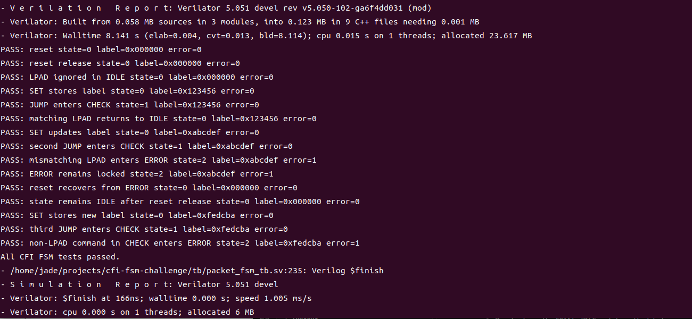
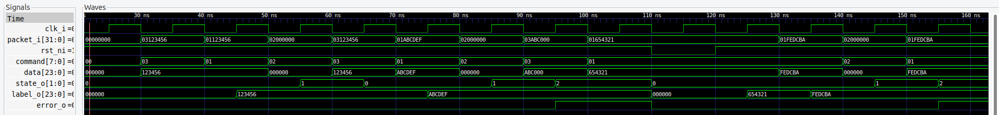

Author: Ruijue Luo
Date: August 3, 2026
The objective of this challenge is to implement a three-state finite-state machine in SystemVerilog. The FSM accepts one 32-bit packet per clock cycle.
Each packet contains:
packet_i[31:24]packet_i[23:0]The supported commands are:
| Command | Value | Function |
|---|---|---|
| SET | 8'h01 |
Store the data field in the internal label register |
| JUMP | 8'h02 |
Enter the CHECK state |
| LPAD | 8'h03 |
Check the data field against the stored label |
The design represents a simplified control-flow integrity mechanism. A jump is accepted only when it is followed by a landing-pad packet containing the expected label.
The FSM contains three states:
IDLE: normal operation and label configurationCHECK: verification of the packet following a JUMPERROR: permanent error state until resetThe state transitions are shown below.
| Current state | Input condition | Operation | Next state |
|---|---|---|---|
| IDLE | SET | Store packet data as label | IDLE |
| IDLE | JUMP | Start landing-pad check | CHECK |
| IDLE | Other command | No operation | IDLE |
| CHECK | LPAD and data matches label | Check passes | IDLE |
| CHECK | Any other condition | Check fails | ERROR |
| ERROR | Any packet | No operation | ERROR |
The ERROR state is sticky. Once it is reached, the FSM remains in ERROR until reset is asserted.
The implemented module uses the following interface.
| Signal | Direction | Width | Description |
|---|---|---|---|
clk_i |
Input | 1 | Clock |
rst_ni |
Input | 1 | Active-low asynchronous reset |
packet_i |
Input | 32 | Command and data packet |
state_o |
Output | 2 | Current FSM state |
label_o |
Output | 24 | Stored label |
error_o |
Output | 1 | High when the FSM is in ERROR |
The state encoding is:
| State | Encoding |
|---|---|
| IDLE | 2'b00 |
| CHECK | 2'b01 |
| ERROR | 2'b10 |
The state and label outputs are included to make the internal behaviour observable during verification.
The implementation separates combinational next-state logic from sequential state and label registers.
`timescale 1ns/1ps
module packet_fsm (
input logic clk_i,
input logic rst_ni,
input logic [31:0] packet_i,
output logic [1:0] state_o,
output logic [23:0] label_o,
output logic error_o
);
localparam logic [7:0] CMD_SET = 8'h01;
localparam logic [7:0] CMD_JUMP = 8'h02;
localparam logic [7:0] CMD_LPAD = 8'h03;
typedef enum logic [1:0] {
IDLE = 2'b00,
CHECK = 2'b01,
ERROR = 2'b10
} state_e;
state_e state_q;
state_e state_d;
logic [23:0] label_q;
logic [7:0] command;
logic [23:0] data;
assign command = packet_i[31:24];
assign data = packet_i[23:0];
always_comb begin
state_d = state_q;
unique case (state_q)
IDLE: begin
if (command == CMD_JUMP) begin
state_d = CHECK;
end
end
CHECK: begin
if ((command == CMD_LPAD) && (data == label_q)) begin
state_d = IDLE;
end else begin
state_d = ERROR;
end
end
ERROR: begin
state_d = ERROR;
end
default: begin
state_d = ERROR;
end
endcase
end
always_ff @(posedge clk_i or negedge rst_ni) begin
if (!rst_ni) begin
state_q <= IDLE;
label_q <= 24'h000000;
end else begin
state_q <= state_d;
if ((state_q == IDLE) && (command == CMD_SET)) begin
label_q <= data;
end
end
end
assign state_o = state_q;
assign label_o = label_q;
assign error_o = (state_q == ERROR);
endmodule : packet_fsm
The active-low reset initializes the state to IDLE and clears the label register.
The label register is updated only when a SET command is received in the IDLE state. A SET command received in CHECK or ERROR cannot modify the stored label.
In CHECK, the FSM returns to IDLE only when both conditions are true:
command == CMD_LPAD
data == label_q
Every other condition causes the FSM to enter ERROR.
A self-checking SystemVerilog testbench was developed to verify the required behaviour.
The following scenarios are covered:
| Test | Expected result |
|---|---|
| Reset | State becomes IDLE and label is cleared |
| LPAD in IDLE | Packet is ignored |
| SET in IDLE | Data is stored in the label register |
| JUMP in IDLE | FSM enters CHECK |
| Matching LPAD in CHECK | FSM returns to IDLE |
| Mismatching LPAD in CHECK | FSM enters ERROR |
| Non-LPAD command in CHECK | FSM enters ERROR |
| Command in ERROR | FSM remains in ERROR |
| Reset in ERROR | FSM returns to IDLE |
The testbench checks the state, stored label, and error output after each test. A mismatch terminates the simulation using $fatal.
`timescale 1ns/1ps
module packet_fsm_tb;
localparam logic [7:0] CMD_SET = 8'h01;
localparam logic [7:0] CMD_JUMP = 8'h02;
localparam logic [7:0] CMD_LPAD = 8'h03;
localparam logic [1:0] STATE_IDLE = 2'b00;
localparam logic [1:0] STATE_CHECK = 2'b01;
localparam logic [1:0] STATE_ERROR = 2'b10;
logic clk_i;
logic rst_ni;
logic [31:0] packet_i;
logic [1:0] state_o;
logic [23:0] label_o;
logic error_o;
packet_fsm dut (
.clk_i (clk_i),
.rst_ni (rst_ni),
.packet_i (packet_i),
.state_o (state_o),
.label_o (label_o),
.error_o (error_o)
);
initial begin
clk_i = 1'b0;
forever #5 clk_i = ~clk_i;
end
task automatic send_packet(
input logic [7:0] command,
input logic [23:0] data
);
begin
@(negedge clk_i);
packet_i = {command, data};
@(posedge clk_i);
#1;
end
endtask
task automatic check_outputs(
input logic [1:0] expected_state,
input logic [23:0] expected_label,
input logic expected_error,
input string test_name
);
begin
if ((state_o !== expected_state) ||
(label_o !== expected_label) ||
(error_o !== expected_error)) begin
$fatal(
1,
"FAIL: %s state=%0d label=0x%06h error=%0b",
test_name,
state_o,
label_o,
error_o
);
end
$display(
"PASS: %s state=%0d label=0x%06h error=%0b",
test_name,
state_o,
label_o,
error_o
);
end
endtask
initial begin
$dumpfile("build/packet_fsm_tb.vcd");
$dumpvars(0, packet_fsm_tb);
rst_ni = 1'b0;
packet_i = 32'h00000000;
repeat (2) @(posedge clk_i);
#1;
check_outputs(
STATE_IDLE,
24'h000000,
1'b0,
"reset"
);
@(negedge clk_i);
rst_ni = 1'b1;
@(posedge clk_i);
#1;
check_outputs(
STATE_IDLE,
24'h000000,
1'b0,
"reset release"
);
// LPAD in IDLE must not change the state.
send_packet(CMD_LPAD, 24'h123456);
check_outputs(
STATE_IDLE,
24'h000000,
1'b0,
"LPAD ignored in IDLE"
);
// SET stores the label while remaining in IDLE.
send_packet(CMD_SET, 24'h123456);
check_outputs(
STATE_IDLE,
24'h123456,
1'b0,
"SET stores label"
);
// Correct JUMP -> LPAD sequence.
send_packet(CMD_JUMP, 24'h000000);
check_outputs(
STATE_CHECK,
24'h123456,
1'b0,
"JUMP enters CHECK"
);
send_packet(CMD_LPAD, 24'h123456);
check_outputs(
STATE_IDLE,
24'h123456,
1'b0,
"matching LPAD returns to IDLE"
);
// A mismatching LPAD must enter ERROR.
send_packet(CMD_SET, 24'hABCDEF);
check_outputs(
STATE_IDLE,
24'hABCDEF,
1'b0,
"SET updates label"
);
send_packet(CMD_JUMP, 24'h000000);
check_outputs(
STATE_CHECK,
24'hABCDEF,
1'b0,
"second JUMP enters CHECK"
);
send_packet(CMD_LPAD, 24'hABC000);
check_outputs(
STATE_ERROR,
24'hABCDEF,
1'b1,
"mismatching LPAD enters ERROR"
);
// ERROR must remain active and the label must not change.
send_packet(CMD_SET, 24'h654321);
check_outputs(
STATE_ERROR,
24'hABCDEF,
1'b1,
"ERROR remains locked"
);
// Reset must recover from ERROR.
// Clear packet_i to prevent the previous SET packet from being
// accepted again after reset is released.
@(negedge clk_i);
rst_ni = 1'b0;
packet_i = 32'h00000000;
@(posedge clk_i);
#1;
check_outputs(
STATE_IDLE,
24'h000000,
1'b0,
"reset recovers from ERROR"
);
@(negedge clk_i);
rst_ni = 1'b1;
@(posedge clk_i);
#1;
check_outputs(
STATE_IDLE,
24'h000000,
1'b0,
"state remains IDLE after reset release"
);
// Any non-LPAD command in CHECK must enter ERROR.
send_packet(CMD_SET, 24'hFEDCBA);
check_outputs(
STATE_IDLE,
24'hFEDCBA,
1'b0,
"SET stores new label"
);
send_packet(CMD_JUMP, 24'h000000);
check_outputs(
STATE_CHECK,
24'hFEDCBA,
1'b0,
"third JUMP enters CHECK"
);
send_packet(CMD_SET, 24'hFEDCBA);
check_outputs(
STATE_ERROR,
24'hFEDCBA,
1'b1,
"non-LPAD command in CHECK enters ERROR"
);
$display("All CFI FSM tests passed.");
#10;
$finish;
end
endmodule : packet_fsm_tb
File:
scripts/run_verilator.sh
#!/usr/bin/env bash
set -euo pipefail
PROJECT_ROOT="$(cd "$(dirname "${BASH_SOURCE[0]}")/.." && pwd)"
BUILD_DIR="${PROJECT_ROOT}/build"
if ! command -v verilator >/dev/null 2>&1; then
echo "Error: verilator was not found in PATH." >&2
echo "Run: source ~/tools/oss-cad-suite/environment" >&2
exit 1
fi
mkdir -p "${BUILD_DIR}"
cd "${PROJECT_ROOT}"
verilator \
--binary \
--timing \
--trace \
-Wall \
-Wno-BLKSEQ \
--top-module packet_fsm_tb \
--Mdir "${BUILD_DIR}/obj_dir" \
"${PROJECT_ROOT}/rtl/packet_fsm.sv" \
"${PROJECT_ROOT}/tb/packet_fsm_tb.sv"
"${BUILD_DIR}/obj_dir/Vpacket_fsm_tb"
The script performs the following steps:
File:
Makefile
.PHONY: test wave clean
test:
./scripts/run_verilator.sh
wave:
gtkwave build/packet_fsm_tb.vcd
clean:
rm -rf build
The complete simulation can be run with:
make clean
make test
The generated waveform can be opened with:
make wave
The self-checking testbench verifies both successful and unsuccessful control-flow checks.
A successful simulation ends with:
All CFI FSM tests passed.
The terminal output from the completed simulation is shown below.

The waveform should contain the following signals:
label_o.state_o from IDLE to CHECK.state_o from CHECK to IDLE.state_o from CHECK to ERROR.error_o remains high until reset.
cfi-fsm-challenge/
├── images/
│ ├── simulation_output.png
│ └── fsm_waveform.png
├── rtl/
│ └── packet_fsm.sv
├── scripts/
│ └── run_verilator.sh
├── tb/
│ └── packet_fsm_tb.sv
├── Makefile
├── README.md
└── report.md